Это отдельный отчёт о серверной серии. Данные заново прочитаны 12 октября 2026 с aicenter3 и из Comet; сами найденные запуски проводились 1–4 октября. Локальная серия dynamic/static/none на RTX 5060 сюда не включена. Обучения на сервере при подготовке отчёта не запускались и не останавливались.
В очереди зарегистрировано 117 заданий. По логам/return codes: 82 имеют признак нормального завершения, 11 не завершены нормально или завершились с ошибкой, 24 не запускались. В папке running осталось 8 старых записей, но соответствующие наши training processes не живы. По одному имени папки нельзя судить о текущем обучении.
Свежий Comet snapshot содержит 87 experiment IDs этой серверной серии, с кривыми/параметрами; ошибок чтения у них нет. Ещё 9 старых IDs ранних остановленных MQAR-попыток не найдены в доступных списках Comet и не используются для сравнения качества. Retries и зарегистрированные задания — не одно и то же число.
На ноде сейчас все семь GPU — H100 80GB HBM3. Для включения эксперимента использована связь job → stdout Comet URL → experiment id. Источники и их hashes сохранены. Никакие метрики чужих текущих процессов не использовались.
Text8: модель читает текст по символам и угадывает следующий символ. BPC — ошибка, меньше лучше. Основные новые модели имеют примерно 1M полных параметров, train/val/test split 90M/5M/5M, бюджет около 1B токенов, 512 потоков и отрезки обучения длиной 64. В основной mid-серии есть seed 42 и 1337, у ряда GRU/Grid форм ещё 31337. Размер памяти и вычисления между разными семействами не уравнены.
MQAR: модель получает несколько пар ключ—значение и затем должна вспомнить правильное значение по ключу. Есть пять уровней сложности с разной длиной и числом пар. В этой серии около 1M параметров recurrent core, но около 4M полных параметров из-за большого vocabulary/embedding. Бюджет новых запусков — 8 эпох, batch 32, полный градиент через последовательность. Старые прерванные попытки и slot-crashes не являются результатами качества.
RL: модель выбирает действия в средах, где нужно помнить прошлые наблюдения. В RepeatPreviousHard вспоминается прошлый элемент; в AutoencodeEasy надо воспроизвести показанную последовательность. Return — награда за эпизод, больше лучше. Бюджет каждого запуска около 8,39M vector slots, один seed. Эти slots нельзя автоматически приравнивать к числу полезных переходов среды.
| Проверка | Простое объяснение | Что остаётся ограничением |
|---|---|---|
| Основные baselines | GRU, Mamba, HGRN2, DeltaNet, mLSTM, RIMs, BRIMs, Grid-GRU, Grid-LRU и Transformer получают сопоставимый бюджет данных | Наши реализации и настройки; это не лучшие опубликованные версии каждого семейства |
| L1C8 / L2C4 / L2C8 / L3C4 | Меняем число слоёв и колонок памяти | Вместе меняются state и вычисления |
| Top-1 / Top-2 | Колонке разрешён один или два выбранных источника вместо всех | Качество не доказывает реальную экономию FLOPs |
| Self-heavy | Больше опоры на свою память | Отдельная Grid-LRU серия |
| Star | Остальные колонки обмениваются через центральную | Фиксированная геометрия маршрутов |
| Star-ring | К центральным связям добавлено кольцо соседей | Меняется доступность источников |
| Clockwork | Некоторые колонки обновляются реже | Меняется частота recurrent updates |
| Block | Входные и выходные проекции LRU разбиты на две группы каналов, между слоями каналы переставляются | Связи между колонками остаются плотными; меняются проекции и число параметров |
| Entmax | Обучаемое более разреженное распределение весов связи | Нет отдельного speedup benchmark |
| Dynamic hub | Центральная колонка выбирает периферию по текущему контексту | Это старый LRU-router, не локальный GRU communication control |
| Write gate | Центр решает, насколько обновлять каждую периферийную память | Добавляются параметры; сохранение памяти не равно sparse execution |
| Query read | Центр читает из памяти только узкую часть, нужную для текущего запроса | Дополнительные read projections |
| Associative | Одна LRU-колонка заменена матрицей, которая записывает и извлекает пары | Весов меньше, state больше; параметры не строго matched |
| Rotations | Небольшие обучаемые повороты напрямую перемешивают состояния | Сохранение нормы поворота не гарантирует стабильность всей модели |
| Two reads | После обычного шага центр ещё раз читает свежие сообщения | Те же веса, но больше вычислений |
| Rollout 64 / 512 | Градиент проходит через короткий или длинный кусок истории | При одинаковом tokens/update streams меняются 512→64 |
| No noise | Убираем шум в маршрутах | Короткий пилот 67M, один seed |
| No communication penalty | Убираем дополнительный штраф за обмен | Сам обмен остаётся |
| No entropy bonus | Убираем дополнительную награду за разнообразие маршрутов | Сам dynamic-router остаётся |
| No aux | Убираем все три добавки к loss | Это не режим none без межколоночного обмена |
Названия control/static/dynamic/none между разными сериями нельзя приравнивать без проверки кода. Реализация локальных dynamic, static, none подробно описана в отдельном отчёте. В серверной абляции регуляризаторов none означает только отсутствие auxiliary noise/loss/bonus.
Основная таблица сравнивает точно одинаковый шаг 980,037,632 токенов по continuous validation. Среднее ± SD считается по отдельным seed. Это не доверительный интервал и не формальный тест значимости.
| Модель | Seed | BPC ↓ |
|---|---|---|
| Mamba | 2 | 1.5651 ± 0.0012 |
| Grid-GRU L3C4 | 3 | 1.5916 ± 0.0012 |
| Grid-GRU L2C4 | 3 | 1.5966 ± 0.0050 |
| Grid-GRU L2C8 | 2 | 1.6082 ± 0.0019 |
| GRU L3 | 2 | 1.6205 ± 0.0076 |
| GRU L2 | 3 | 1.6368 ± 0.0018 |
| Grid-GRU L1C8 | 2 | 1.6369 ± 0.0016 |
| Grid-LRU L3C4 | 3 | 1.6690 ± 0.0052 |
| HGRN2 | 2 | 1.6695 ± 0.0005 |
| GRU L1 | 2 | 1.6807 ± 0.0003 |
| Grid-LRU L2C8 | 2 | 1.7156 ± 0.0047 |
| mLSTM | 2 | 1.7163 ± 0.0039 |
| Grid-LRU L1C8 | 2 | 1.7473 ± 0.0005 |
| DeltaNet | 2 | 1.7849 ± 0.0005 |
| RIMs | 2 | 1.8744 ± 0.0977 |
| BRIMs | 2 | 1.8968 ± 0.0318 |
Grid-LRU L2C4 оставлен отдельно со всеми 3 seed: 1.6750 ± 0.0032 BPC в собственной общей точке 960,036,864. У одного seed отсутствует метрика основной поздней точки; seed не удалён ради совпадения budget.
Общая точка абсолютно всех recurrent/baseline групп в свежем snapshot только 420,016,128: после неё пропуски у GRU-L2 и Grid-LRU-L2C4 чередуются. Поэтому основной поздний срез выбирается только по наличию точек у всех seed группы, без просмотра их качества. Ранний общий срез сохранён отдельно в analysis.json и на дополнительном графике.
Transformer показан отдельно: 1.6396 ± 0.0098 BPC, 2 seed, собственная общая точка 982,646,784. Эта точка не совпадает с основной таблицей; интерполяция не применялась.
В основном позднем срезе Mamba даёт самый низкий средний BPC; далее идут Grid-GRU L3C4 и L2C4. Grid-LRU в целом хуже соответствующего Grid-GRU. Большая глубина сама по себе не улучшает результат одинаково у всех семейств. Точный порядок виден в таблице и на графиках; он относится к этим настройкам и seed.
| Серия | Вариант | Общие токены | BPC ↓ |
|---|---|---|---|
| topk | dense | 980,037,632 | 1.5921 |
| topk | top1 | 980,037,632 | 1.8869 |
| topk | top2 | 980,037,632 | 1.6353 |
| sparse | control | 240,009,216 | 1.8779 |
| sparse | self_heavy | 240,009,216 | 1.8631 |
| sparse | star | 240,009,216 | 1.8724 |
| sparse | star_ring | 240,009,216 | 1.8897 |
| sparse | clockwork | 240,009,216 | 1.9282 |
| sparse | block | 240,009,216 | 1.9487 |
| sparse | entmax | 240,009,216 | 1.8806 |
| sparse | dynamic_hub | 240,009,216 | 1.8153 |
| architecture | control | 980,037,632 | 1.6687 |
| architecture | write_gate | 980,037,632 | 1.6675 |
| architecture | query_read | 980,037,632 | 1.6872 |
| architecture | associative | 980,037,632 | 1.6938 |
| architecture | rotations | 980,037,632 | 1.6663 |
| architecture | two_reads | 980,037,632 | 1.6530 |
| ablation | full | 50,331,648 | 1.9260 |
| ablation | no_aux | 50,331,648 | 1.9282 |
| ablation | no_noise | 50,331,648 | 1.9243 |
| ablation | no_comm_penalty | 50,331,648 | 1.9220 |
| ablation | no_entropy_bonus | 50,331,648 | 1.9224 |
Варианты с дополнительной памятью не дают общего улучшения на Text8. Результат отдельного варианта надо сравнивать с его собственным control, а не с другим LRU baseline. Короткие регуляризаторные ablations отвечают только на ранний участок обучения.
| Модель | r64 BPC | r512 BPC | Разница r512−r64 |
|---|---|---|---|
| Grid-GRU | 1.9260 | 1.9464 | +0.0204 |
| Grid-LRU | 2.4867 | 2.4870 | +0.0004 |
| GRU | 1.9826 | 2.0034 | +0.0208 |
| LRU | 2.1575 | 2.1552 | -0.0022 |
Каждому pilot дан budget 67 108 864 токена, 2048 updates. В свежих Comet-кривых финальные оценки отсутствуют: последняя точно общая точка сравнительной таблицы — 50 331 648 токенов. Финальные округлённые BPC из stdout приведены отдельно ниже. Более длинный backprop помогает не всем моделям. Это пилот для выбора следующих проверок, а не финальная оценка после 1B.
| Pilot | Вариант | BPC на 67.11M (округлено в логе) |
|---|---|---|
| rollout | Grid-GRU r64 | 1.862 |
| rollout | Grid-GRU r512 | 1.883 |
| rollout | Grid-LRU r64 | 2.300 |
| rollout | Grid-LRU r512 | 2.317 |
| rollout | GRU r64 | 1.912 |
| rollout | GRU r512 | 1.928 |
| rollout | LRU r64 | 2.068 |
| rollout | LRU r512 | 2.067 |
| auxiliary ablation | full | 1.862 |
| auxiliary ablation | no_aux | 1.866 |
| auxiliary ablation | no_noise | 1.868 |
| auxiliary ablation | no_comm_penalty | 1.863 |
| auxiliary ablation | no_entropy_bonus | 1.861 |
Эти цифры округлены до трёх знаков исходным stdout. Они не подменяют Comet-точки большей точности; малые различия ниже разрешения округления не интерпретируются.
Что показывает rollout pilot. На финальных 67.11M токенов r512 хуже r64 у Grid-GRU примерно на 0.021 BPC, у Grid-LRU — на 0.017, у GRU — на 0.016. У LRU разница около −0.001 BPC, практически на уровне округления. Поэтому здесь не видно общего выигрыша от перехода к длинному backpropagation. Это совместное изменение длины rollout 64→512 и числа потоков 512→64 при одинаковых 32,768 tokens/update, а не изолированная проверка длины градиента. Частота случайных resets по токенам в конфигурациях компенсирована.
Что показывает auxiliary pilot. Все пять вариантов заканчивают в узком диапазоне 1.861–1.868 BPC. Относительно full удаление entropy bonus даёт примерно −0.001, communication penalty — +0.001, всех добавок — +0.004, routing noise — +0.006 BPC. Значения ±0.001 нельзя использовать для уверенного ранжирования по округлённому логу. На точной Comet-точке 50.33M no_noise и no_comm_penalty ещё немного лучше full; к финалу знак их различий меняется. Значит, порядок чувствителен к моменту оценки.
Граница вывода. Каждый вариант представлен одним seed и коротким бюджетом 67M вместо 1B. Эти результаты не доказывают ненужность регуляризаторов и не объясняют сами по себе низкую SDQ accuracy локального dynamic_column0: pilot относится к Text8. Приоритетное наблюдение здесь — отсутствие общего раннего выигрыша r512; влияние отдельных auxiliary additions требует полного бюджета и повторных seed.
Все шесть вариантов сравниваются в точке 173,598,720 токенов, доступной у каждого. Отдельно показана последняя доступная точка каждого запуска: её нельзя использовать как одинаковый budget для ранжирования.
| Вариант | Accuracy на общей точке | Macro по пяти bins | Последняя доступная Acc | Токены последней точки |
|---|---|---|---|---|
| control | 2.70% | 8.57% | 2.69% | 190,664,704 |
| write_gate | 2.36% | 8.12% | 2.32% | 190,664,704 |
| query_read | 0.02% | 0.03% | 0.02% | 173,598,720 |
| associative | 2.06% | 7.44% | 1.52% | 182,636,544 |
| rotations | 1.74% | 6.56% | 1.70% | 190,664,704 |
| two_reads | 1.74% | 6.52% | 1.80% | 186,650,624 |
У всех моделей общая accuracy остаётся низкой. Короткие и лёгкие примеры заметно проще длинных и нагруженных памятью. Большая training accuracy не означает такую же held-out accuracy; query-weighting усиливает вес сложных bins.
В query_read и associative видны большие всплески gradients, а query_read пропускает часть updates. Лучший ранний момент и поздний результат могут сильно различаться. Поэтому здесь показаны полные траектории, а не только лучший score. Comet не содержит все финальные оценки, которые есть в stdout. Серверные status.json/metrics.json для этих старых MQAR-запусков в проверенном каталоге runs не найдены. Свежие Comet кривые и stdout доступны; полного подтверждения финальной оценки каждого варианта из run artifacts здесь нет.
Для основного сравнения используем среднее последних четырёх общих eval steps. Это четыре точки одного обучения, а не четыре независимых запуска. Отдельно показываем лучший записанный момент, чтобы видеть возможное ухудшение.
| Среда | Модель | Последние 4 общие оценки | Лучший записанный Return |
|---|---|---|---|
| RepeatPreviousHard | GRU | -0.5161 | -0.4857 |
| RepeatPreviousHard | LRU | -0.3809 | -0.3404 |
| RepeatPreviousHard | Grid-GRU | -0.4942 | -0.4796 |
| RepeatPreviousHard | Grid-LRU | -0.4973 | -0.4823 |
| RepeatPreviousHard | dynamic_hub | -0.4963 | -0.4871 |
| RepeatPreviousHard | two_reads | -0.4927 | -0.4817 |
| AutoencodeEasy | GRU | -0.4964 | -0.4736 |
| AutoencodeEasy | LRU | -0.4663 | -0.4002 |
| AutoencodeEasy | dynamic_hub | -0.5072 | -0.4928 |
| AutoencodeEasy | two_reads | -0.5111 | -0.4952 |
Эта короткая RL-серия не показывает устойчивого общего преимущества модульных моделей. Отдельный лучший момент не означает, что улучшение сохраняется к концу обучения. По одному seed нельзя делать вывод о надёжности RL обучения.
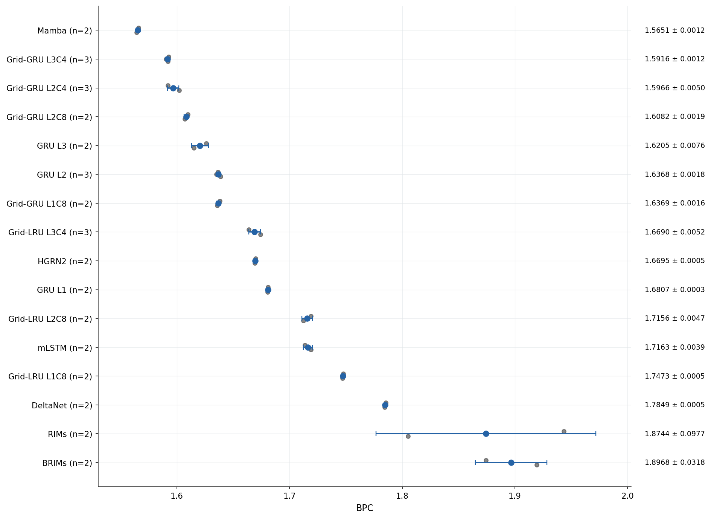
Точки — отдельные seed; центр и whiskers — среднее ± SD между seed, не CI. Все эти модели около 1M полных весов. Transformer приведён отдельно из-за другого набора точек оценки.
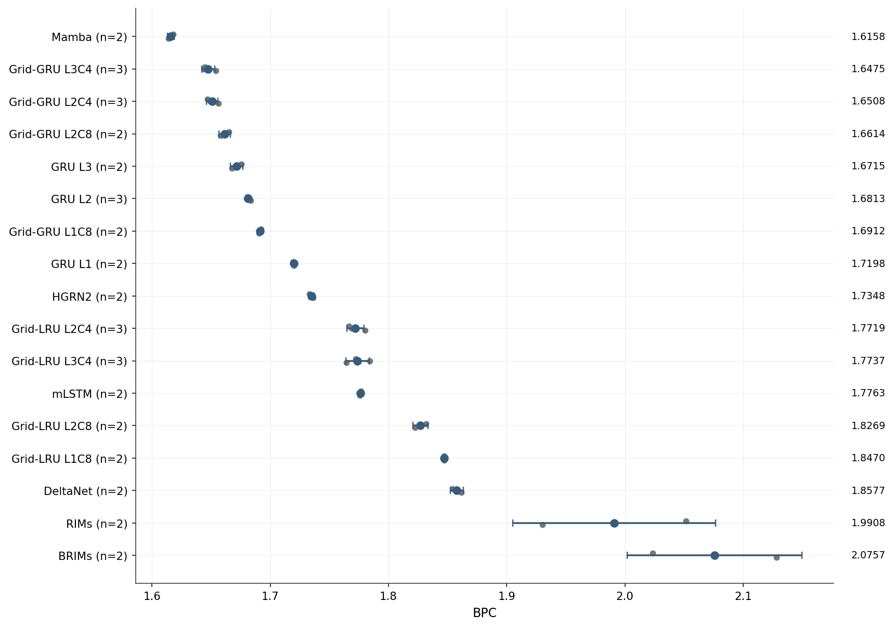
Все 17 non-Transformer групп, без удаления seed: 420,016,128 токенов. Это ранний срез. Основной поздний рейтинг приведён отдельно.
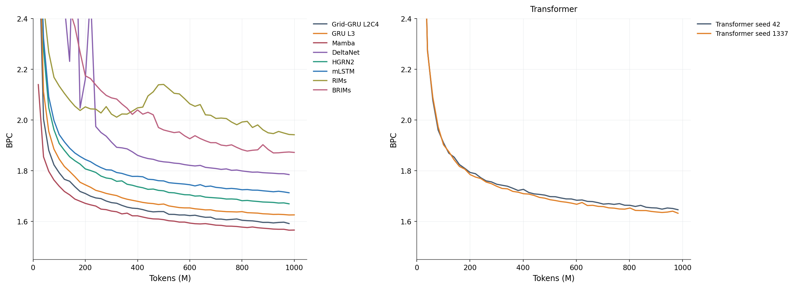
Кривые continuous validation. Область BPC выше 2.4 в начале выходит за ось; полные значения сохранены в исходном snapshot. Transformer нельзя подставлять в общую точку без отдельного правила согласования.
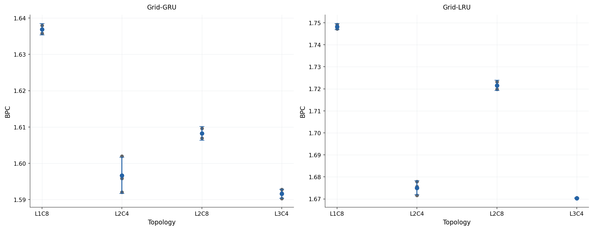
Общий шаг 980037632; каждая точка seed видна. Размер state и вычисления различаются между формами, несмотря на близкое число весов.
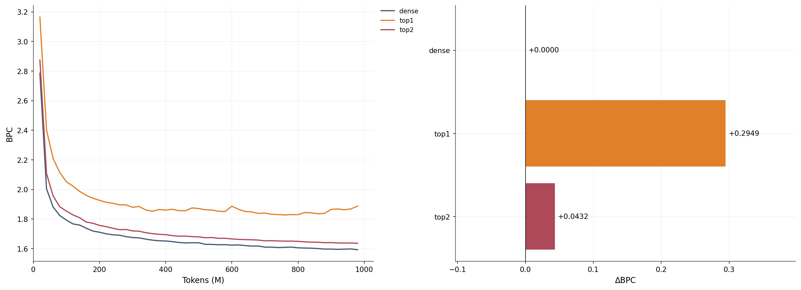
Один seed 42. Top-k меняет допустимые источники сообщения; эти запуски не измеряют выигрыш sparse execution или полной стоимости FLOPs.
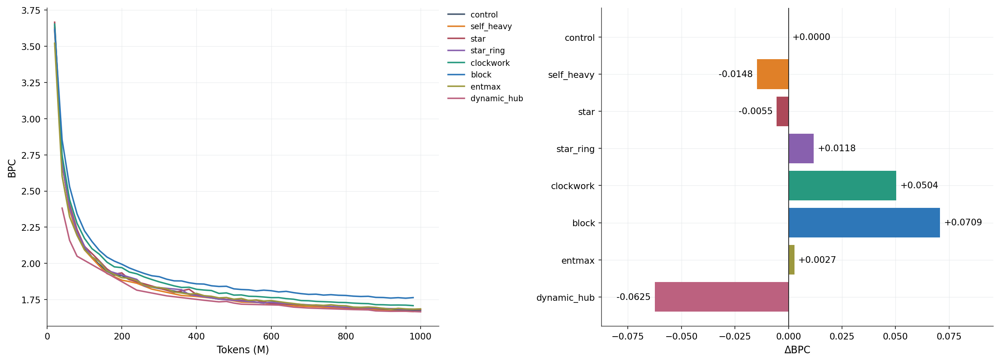
Сравнение с отдельным LRU control, не с текущей локальной clean-серией. Разные схемы распределяют сообщения и частоту обновлений; скорость экономии вычислений отдельно не доказана.
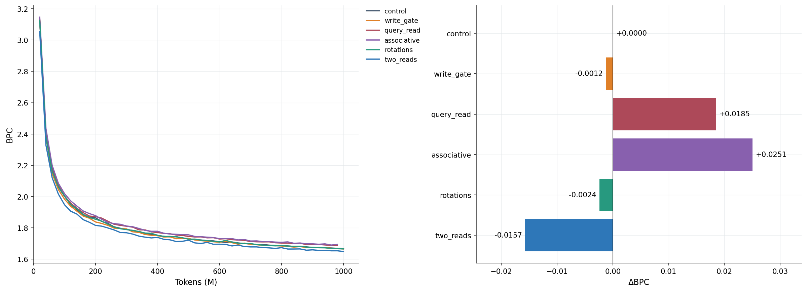
Ширина сохранена, но параметры, state и вычисления не строго равны. Two-reads добавляет вычисления; associative заменяет LRU-колонку матрицей памяти.
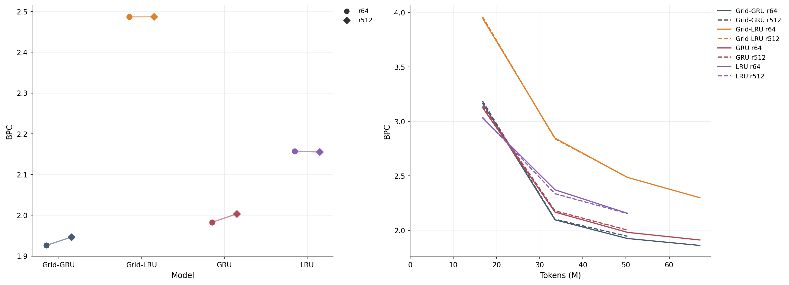
Каждому pilot дан бюджет 67 108 864 токенов, 2048 updates; точки слева сравниваются на общей Comet-точке 50 331 648. Tokens/update одинаковы; streams меняются 512→64, поэтому это не изолированный эффект длины backprop. Линии — один seed.
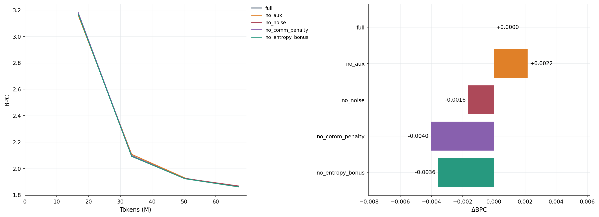
no_comm_penalty отключает штраф, а no_aux — все три добавки. Сам обмен между колонками остаётся во всех этих H100 вариантах. Это не локальный routing=none.
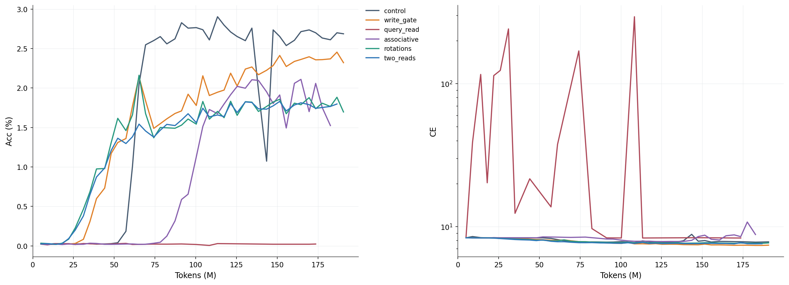
MQAR — отдельная задача, V8192 и около 4M полных весов, из них около 1M core. CE на логарифмической шкале. Разные конец/полнота Comet-логов показаны в таблице отдельно; stdout может содержать более поздние округлённые оценки.
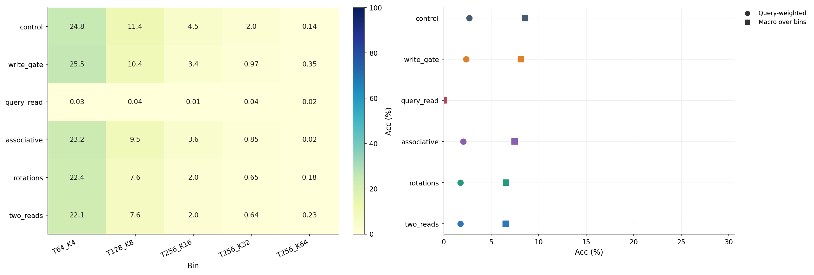
T — длина последовательности, K — число пар. В общей accuracy длинные примеры имеют больше queries. Macro сначала одинаково взвешивает пять bins. Это разные критерии.
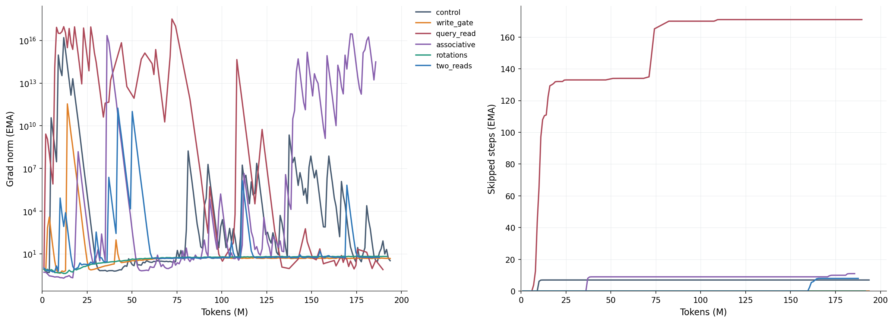
Это сглаженные training diagnostics, а не точный cumulative counter или повторные обучения. Большие private-state/gradient колебания — наблюдение, не доказанный диагноз причины.
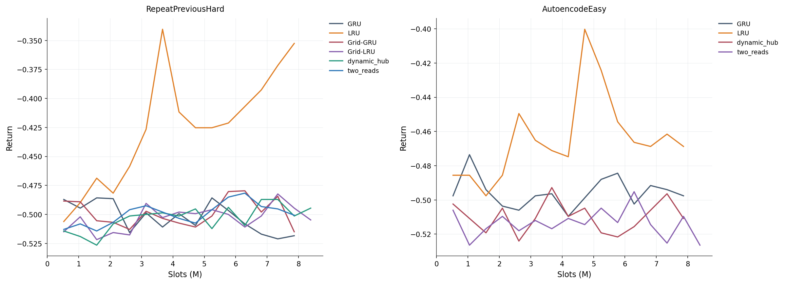
Return — награда за эпизод, больше лучше. X считает vector slots, не только valid environment transitions. Среда и протокол отличаются от Text8/MQAR.
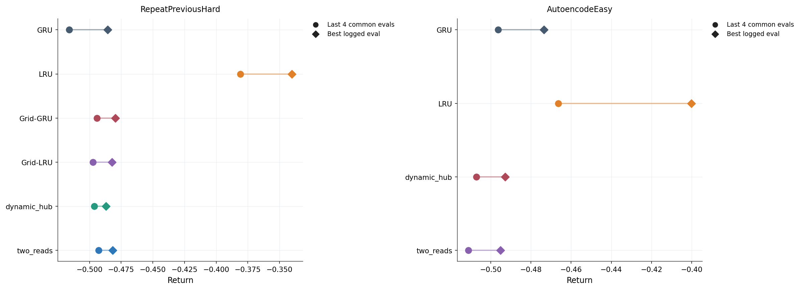
Последние четыре оценки — четыре точки одного обучения, не четыре seed. Best logged evaluation приведена как диагностика, не как выбранный основной результат.
Каждая кривая прочитана из свежего Comet snapshot по ID из H100 stdout. Если у одного шага несколько значений, используется запись с последним timestamp. Нечисловые/нефинитные точки не рисуются. Для сравнения вариантов берётся последний точно общий шаг; значения между точками не интерполируются. BPC вычисляется как cross-entropy / ln(2).
Text8 основной серии использует continuous validation для quality curves; checkpoint selector исторически использовал reset-1024 validation. В этом отчёте нет выбора вариантов по test. Pilot и full-budget curves не объединяются в один рейтинг; MQAR и RL не приравниваются к Text8.
Много seed есть только у части Text8 baselines. Остальные механизмы/пилоты/RL в основном представлены одним seed. Error bars в baseline-графиках — SD между seed. Соседние checkpoints не считаются повторными обучениями.
Скорость H100 из этих совместных запусков не является изолированным hardware benchmark: одновременно работали другие процессы, а SDK мог задерживать upload. Поэтому в основные графики качества не включены шумные Comet perf/fps и durationMillis как «чистое время модели».
Снимок серверной очереди и stdout, свежие метрики Comet, Результат поиска MQAR run artifacts: пустой, числовой анализ, все задания CSV, baselines CSV, PDF всех графиков, галерея. SHA256 исходных снимков сохранены в analysis.json.
# Повторить графики без сети и без обучения:
.venv/bin/python inference/h100_report.py
# Только при необходимости обновить read-only Comet snapshot:
.venv/bin/python inference/fetch_h100_report.py
Незавершённые/упавшие slot-проверки и ранние остановленные MQAR-запуски остаются в inventory, но не получают придуманных значений качества. Нет claims о state of the art или полном закрытии замечаний статьи: это отчёт о доступных проведённых проверках.